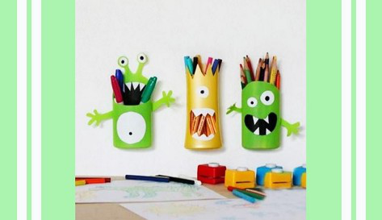

BOARD
PROFILE
LOGOUT
Pemanfatan Botol Bekas Menjadi
Tempat Pensil Lucu
Di Posting Oleh
Dini Almira
23 Maret 2021

Tempat Pensil Lucu
Alat dan Bahan :
Botol shampo bekas
Kertas atau stiker warna
Gunting, cutter
Double tip
Cara Membuat:
Buat pola/bentuk pada botol shampo
Potong sesuai pola menggunakan cutter/gunting
Buat tangan pada bagian yang dipotong/tidak digunakan
Bentuk wajah dan riasan, lalu rekatkan semua bagian dengan lem
Rekatkan double tip pada bagian belakang tempat pensil
Selesai